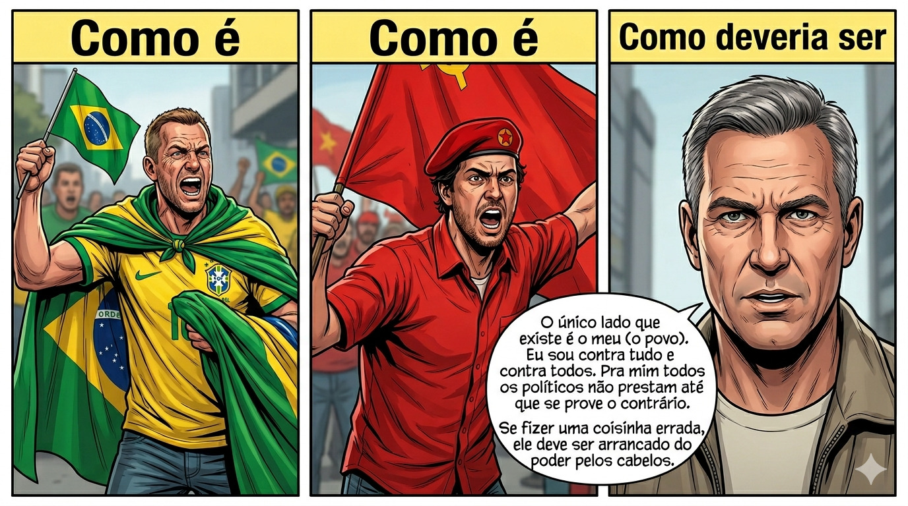

Opinião
Como Deveria Ser

Eu convido todos vocês a fazerem parte desse novo lado do espectro político: o Antagonista: aquele que é contra tudo e contra todos e defende apenas o próprio lado. Vem!

Eu convido todos vocês a fazerem parte desse novo lado do espectro político: o Antagonista: aquele que é contra tudo e contra todos e defende apenas o próprio lado. Vem!

Carregando comentários...